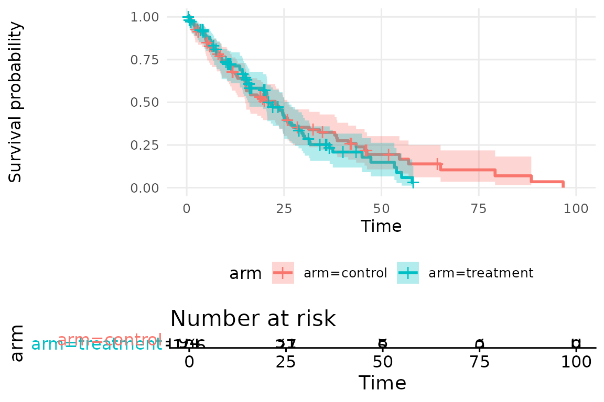
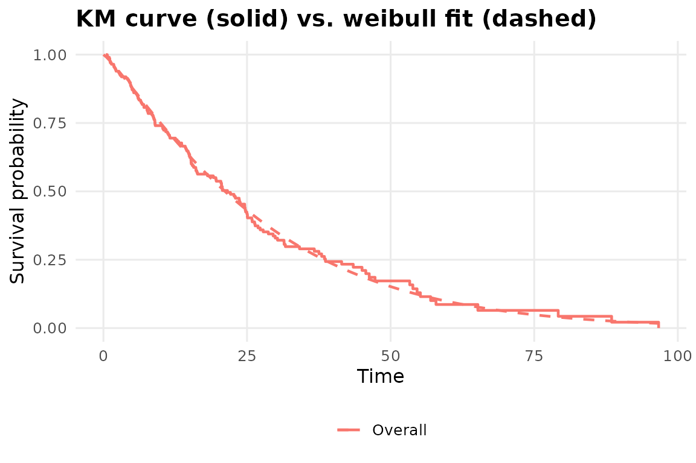

Kaplan-Meier vs. Cox: different questions
fit_coxph_pipeline()
models how covariates change the hazard.
fit_km_pipeline() answers a simpler, more descriptive
question first: what does survival actually look like in this sample,
with no modeling assumptions at all beyond independent censoring? In
practice you’d usually run this before, not instead of, the Cox pipeline
– it’s the plot that goes in a results section before the hazard ratios
do.
A simulated example
set.seed(1)
n <- 200
dat <- data.frame(
time = rexp(n, rate = 0.05),
event = rbinom(n, 1, 0.7),
arm = factor(sample(c("control", "treatment"), n, replace = TRUE))
)
fit <- fit_km_pipeline(dat, "time", "event", strata_var = "arm")
fit
#> <omicsuite Kaplan-Meier pipeline>
#>
#> Call: survfit(formula = survival::Surv(time, event) ~ arm, data = data,
#> conf.type = conf_type)
#>
#> n events median 0.95LCL 0.95UCL
#> arm=control 94 69 22.7 15.0 25.9
#> arm=treatment 106 69 20.7 15.7 26.3
#>
#> Diagnostic verdicts:
#> [INTP] interpretation[median_survival_control] Median survival for `control`: 22.74 (95% CI [15.03, 25.90]) among 94 subjects, 69 events. [see plots$km_plot]
#> [INTP] interpretation[median_survival_treatment] Median survival for `treatment`: 20.70 (95% CI [15.70, 26.32]) among 106 subjects, 69 events. [see plots$km_plot]
#> [INTP] interpretation[log_rank_test] Log-rank test across `arm`: chi-squared = 0.44 (df = 1), p = 0.5083. No significant evidence that survival differs across groups at this alpha. [see plots$km_plot]
#> [INFO] censoring_summary 62 of 200 subjects (31.0%) were censored rather than observed to have the event. [see plots$km_plot]Reading the verdict table
fit$verdicts
#> check verdict statistic p_value
#> 1 interpretation[median_survival_control] interpretation 22.7366283 NA
#> 2 interpretation[median_survival_treatment] interpretation 20.7048789 NA
#> 3 interpretation[log_rank_test] interpretation 0.4374705 0.5083458
#> 4 censoring_summary info 0.3100000 NA
#> note
#> 1 Median survival for `control`: 22.74 (95% CI [15.03, 25.90]) among 94 subjects, 69 events.
#> 2 Median survival for `treatment`: 20.70 (95% CI [15.70, 26.32]) among 106 subjects, 69 events.
#> 3 Log-rank test across `arm`: chi-squared = 0.44 (df = 1), p = 0.5083. No significant evidence that survival differs across groups at this alpha.
#> 4 62 of 200 subjects (31.0%) were censored rather than observed to have the event.
#> plot
#> 1 km_plot
#> 2 km_plot
#> 3 km_plot
#> 4 km_plotinterpretation[median_survival_<stratum>] restates
the median survival time and its CI in plain language – including the
not-reached case explicitly, rather than silently printing
NA. interpretation[log_rank_test] is the
global test of whether the strata differ; censoring_summary
is worth checking before trusting either: heavy censoring is exactly
when “median not reached” starts showing up and when the log-rank test
loses power.
The KM plot
plot(fit, which = "km_plot")
#> Ignoring unknown labels:
#> • colour : "arm"
If you have survminer
installed, this includes a risk table underneath; without it,
omicsuite falls back to a plain ggplot2
step-function plot so the pipeline still works, just without the risk
table and with a simpler (linearly interpolated rather than
stair-stepped) confidence ribbon.
Optional: a parametric overlay
Sometimes you want to know whether a parametric family (Weibull, exponential, …) is a reasonable summary of the same data – useful if you’re about to extrapolate beyond the observed follow-up period, which a KM curve alone can’t do.
fit_param <- fit_km_pipeline(dat, "time", "event", parametric_dist = "weibull")
#> Ignoring unknown labels:
#> • fill : ""
plot(fit_param, which = "parametric_overlay")
fit_param$verdicts[grepl("^parametric", fit_param$verdicts$check), ]
#> check verdict statistic p_value
#> 3 parametric_fit[weibull] info 1204.45 NA
#> 4 parametric_overlay[weibull] review NA NA
#> note
#> 3 Weibull parametric fit: AIC = 1204.5, log-likelihood = -600.2. Compare AIC across candidate distributions if trying to choose one; lower is better.
#> 4 Compare the parametric curve against the KM step function in plots$parametric_overlay -- systematic divergence suggests this distributional family is a poor fit, regardless of what the AIC alone suggests.
#> plot
#> 3 parametric_overlay
#> 4 parametric_overlayThe AIC row is informational – useful for comparing candidate
distributions against each other – but the overlay plot is what actually
tells you whether the fit is any good; a low AIC among bad options is
still a bad fit, which is why that row is marked "review"
rather than auto-scored.